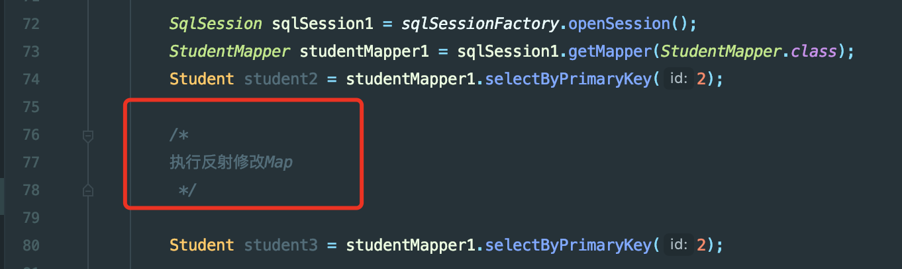
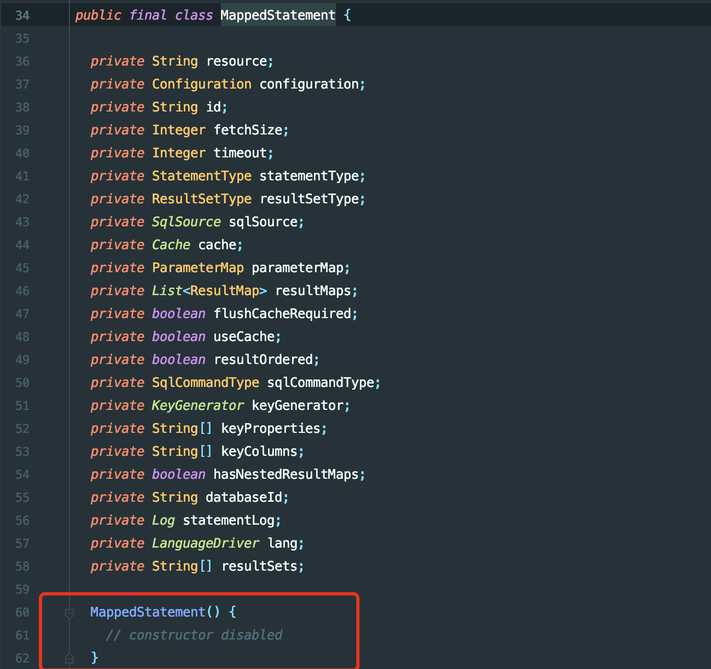

CVE-2020-26945 mybatis反序列化复现思考
前言
就不完整写了，漏洞刚出来时候跟了跟，发现自己的想法行不通，当作记录吧.一些碎碎念
漏洞笔记
漏洞通告：https://github.com/mybatis/mybatis-3/pull/2079
开启二级缓存后第一次查询的结果会被缓存至PerpetualCache.cache中，起初的想法是能不能动本地缓存LocalCache，通过类似内存shell的思路反射修改内存Map.

在实战场景下通过任意代码执行能够修改cache中的Map，将key对应的value修改为我们的恶意类，在请求一次sql语句就能成功执行代码。但是该属性或者调用的cache类都由MappedStatement类息息相关。然而该类没有构造方法，无法反射获取，也就造成了不能直接通过反射修改cache中的value值.

最后的思路或许只能利用缓存库，手动修改内容，造成反序列化，实战可以配合redis漏洞
漏洞修复
开启jep290